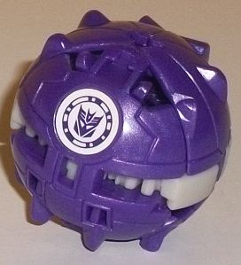 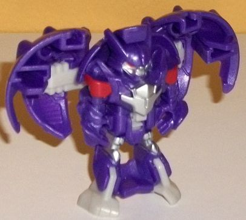
Allegiance : Decepticon
Size : Mini-Con
Difficulty of Transformation : Very Easy
Color Scheme : Royal semi-metallic purple and some light milky gray, silver, and dark red
Individual Rating : 4.6
Set Price
: $15 U.S.
Overall Rating
: 6.6
(NOTE: Because this set is composed mostly
of repaints, this is not a full-blown review. This mainly covers any changes
made to the relevant molds and their color schemes, and merely compares
them to the original versions of these molds. For a review on the "Scorch
Strike" version of Undertone, go
here
.
For a review on the normal version of Decepticon Anvil, go
here
.
For a review on the normal version of Decepticon Hammer, go
here
.)
 Decepticon
Anvil
Decepticon
Anvil
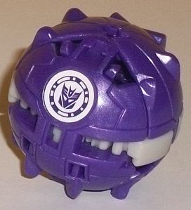
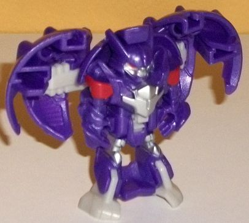
Allegiance
: Decepticon
Size
: Mini-Con
Difficulty of Transformation
: Very
Easy
Color Scheme
: Royal semi-metallic
purple and some light milky gray, silver, and dark red
Individual Rating
: 4.6
Anvil's redeco for this
4-pack certainly looks more "Decepticon-y" than his initial release in
a 2-pack with Sideswipe. This time around Anvil's main color by far is
purple-- but in keeping with the Decepticon norm, it's a ROYAL purple.
Because he's better than you. And it's also got a bit of glitter in it,
so it's sparkly and semi-metallic, which means he's MUCH better than you.
(Or at least HE thinks so.) Anyways, it's a GREAT main color, and it's
one of the few times I don't mind the lack of paint in ball mode because
I just like it so much. There is, unfortunately, that very boring light
milky gray plastic used on this toy, but thankfully it's not used much--
just on the feet and some minor connector parts on his shoulders. In robot
mode, to help break up all the purple there's some silver paint on the
chest, knees, and face, with some dark red on the shoulders and eyes. I
wish the red was a titch lighter so it contrasted against the purple better,
but otherwise they're swell accent shades.
No mold changes have
been made to this version of Anvil, so he unfortunately still doesn't have
any armor pieces.
 Decepticon
Hammer
Decepticon
Hammer
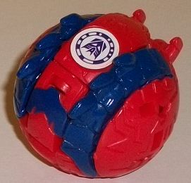
 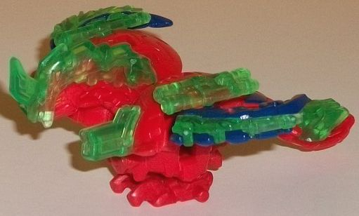
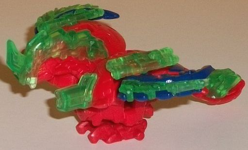
Allegiance
: Decepticon
Size
: Mini-Con
Difficulty of Transformation
: Very
Easy
Color Scheme
: Bold red, transparent
green, and some dark glossy blue, silver, and dull silver
Individual Rating
: 8.0
This version of Hammer
is his third color scheme, but given that this is basically my favorite
Mini-Con mold I don't mind-- heck, I'll buy ten! Gimme "Flight of the Hammers!"
Ahem. Anyways, the main color of Hammer this time around is red-- but it's
a very bold shade of red. It's hard to describe and it's not something
that comes through easily via photos, but it really catches the eye and
stands out more than your average red. It looks pretty darned nice. On
his extended wings and on a small section of Hammer's tail are a nice glossy
dark blue paint, which contrasts excellently against the red-- as with
most Mini-Cons, I wish there was more of this paint for better contrast,
particularly in bird mode. For some minor accent colors, Hammer's eyes
are a dull yellow and his beak is painted silver-- they're nice touches,
but aren't nearly prevalent enough to add anything to the color scheme
overall. Hammer is one of the 2 Mini-Cons in the set to come with armor
pieces, and his are transparent green this time. Not a dark pine green
like on his original solo release, but a medium-light, more "normal" shade
of the color. It looks pretty decent against the main colors of the toy,
though it's not as much of a "home run" as some of the other transparent
armor color pieces on Mini-Cons.
No mold changes have
been made to this version of Hammer.
 Slipstream
(Weaponizer)
Slipstream
(Weaponizer)
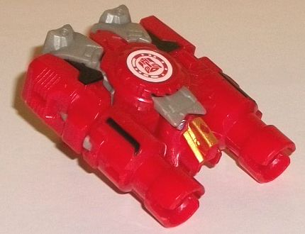
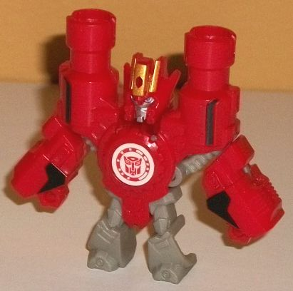
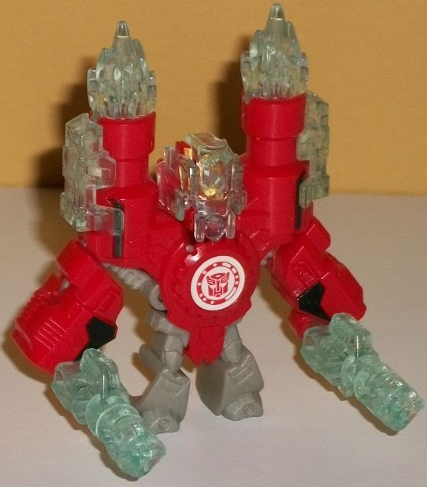
Allegiance
: Autobot
Size
: Mini-Con
Difficulty of Transformation
: Very
Easy
Color Scheme
: Red, transparent icy
clear plastic, light milky gray, and some black, silver, light metallic
silvery blue, and metallic gold
Individual Rating
: 7.2
Slipstream is the sole
new mold in this pack (if you're counting its first appearance time-wise),
and it's basically a Weaponizer version of him-- no longer a
disc
,
now he's a dual-barreled gun! It certainly makes a lot more sense for an
alt mode than a disc, and there's a flip-out handle on the underside so
a larger RID2015 toy can hold him. The head sticks out rather obviously
in between the two large gun barrels, but everything else fits in pretty
darned nicely with the overall silouhette of a blaster-- from that perspective,
it's a pretty solid mode. When it comes to mold detailing, he's got a cool
"gear detail" around the center Autobot-scan symbol on his body, as well
as some basic circuitry and hinge-like details on the front portion of
the main body, with some slit details on the back sides and a few other
basic lines. For a Mini-Con at least, Slipstream's mold detailing is slightly
below-average (though still good). The color scheme is where this mold
is at its weakest-- not that the basic color scheme of red, black, and
light milky gray is that bad (though it is pretty basic, and if you've
been reading my reviews for a while now you know I hate that bland light
milky gray plastic). The problem is the mold breakup of the colors-- if
it wasn't for them being molded in light gray, the robot feet and the head
"cover-up" piece would blend in with the overall mold pretty well, but
as is they stick out like a sore thumb. The main color of red is a pretty
standard, though nice, shade, and the black paint apps on what become the
arms and shoulders are appreciated and help add a bit more contrast to
his basic color scheme.
To transform Slipstream
to his robot mode, you fold his handle in and then do the same as you did
on his initial version-- just split apart his arms (or slide down his legs)
and the rest auto-transforms. Similar to his original version, Slipstream
has a rather muscular, top-heavy look, with proportionally small legs and
large arms. This is emphasized even more on this toy, what with his shoulders
now extending further up into his twin blaster barrels. Much of the same
details are apparent in both modes, so not much new color-wise or detail-wise
is visible here that wasn't in his blaster mode-- that is, except for the
head. Slipstream has the same angular side antennae as his original figure,
but he has more of a "crown" on top of his head this time, and painted
gold no less! His face has an angry expression on it as well, definitely
making him look like he's powered-up and ready to blast holes in some 'Cons.
(As usual, his face is painted silver and his eyes a light metallic blue.)
Unfortunately Slipstream can't move at all in this mode, though articulation
isn't really the point of these little guys. Slipstream's armor pieces
are an arctic icy blue plastic that has just a
tinge
of blue in
it, and looks like ice-- I guess this version of Slipstream is a freeze
gun or something like that. Regardless, they contrast excellently with
the red. As for the pieces themselves, he's got two "blaster-fire" pieces
that plug into his barrels; two pieces that clip on the sides of his blaster
barrels to beef them up a bit, though mine fall off rather easily; two
guns he can hold in his hands (or which can fit into tiny tabs on the top
of his gun mode); and a square helmet piece that fits over his regular
head. All in all they're pretty cool extras, and thankfully all of them
can fit on his weapon mode as well (even his helmet).
 Undertone
Undertone
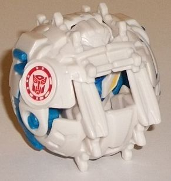
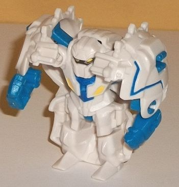
Allegiance
: Autobot
Size
: Mini-Con
Difficulty of Transformation
: Very
Easy
Color Scheme
: White, moderately
light blue, and some yellow, glossy blue, dark metallic charcoal gray
Individual Rating
: 6.5
Given the color scheme,
you'd expect Undertone here to be "Blizzard Strike Undertone", but no,
these are his actual "normal" colors that he's shown in in the show; the
previous version was the themed "Scorch Strike" version. (That said, in
the show he transformed into a disc like other Autobot partner Mini-Cons,
but here he's a ball, so... eh.) Anyways, Undertone's main color here is
a plain white, but the moderately light blue that's used as the main foil
color for the white-- particularly in robot mode-- really makes the scheme
and helps give him some great contrast. Granted, I wish there was more
of it (it's used on the lower arms, the inner shoulders, two angular lines
on the ball mode, and on a few minor connector pieces), but it still looks
pretty good. Interestingly enough, the blue paint used on Undertone's chest
is NOT the same color as the blue plastic, but a noticeably darker (and
glossier) color. Although I don't think it pops against the white quite
as well as the blue plastic, it still looks pretty good, there. To finish
up summarizing Undertone's paint apps, he's got yellow bits on his chest
and his eyes, and a dark metallic charcoal gray paint on a "mask" across
the area around the eyes. The yellow eyes against the "mask" looks pretty
good, and gives him a bit of personality-- the "strong, silent type-- emphasis
on silent" as Ratchet says in the show, indeed. The yellow bits on the
chest don't look as hot, as they don't contrast against the white particularly
well. Plus, are they supposed to be fake "eyes" from his alt mode? But
his alt mode's a ball... They're just kinda weird, is all (though similar
paint apps are on his Scorch Strike variant as well).
No mold changes have
been made to Undertone compared to his previous version; however, sadly
the armor pieces have been removed from this version, since only 2 Mini-Cons
in a 4-pack get armor. (This is the only reason this version of Undertone
doesn't surpass my rating for the Scorch Strike variant.)
This second Mini-Con
4-pack is my favorite of the three total released in RID2015. Slipstream--
the sole new mold in the pack-- is a swell "introduction" to the Weaponizer
Mini-Cons (given the timing of this release), looking pretty nice in both
modes. 2 of the 3 remaining Mini-Cons are both some of the best molds in
the pre-Weaponizer line, but with superior paint jobs compared to the previous
version(s). Even the sole weak mold in the set-- Anvil-- has a much better
color scheme as well, and hey, this time he's packed in with Hammer, finally.
So if you like the RID2015 Mini-Cons, this is a VERY easy recommendation.
Reviews by Beastbot